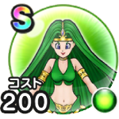

風の精霊
まぼろしのSPメガモン戦闘開始時から3ターンの間敵のバギ属性攻撃でHPを回復する効果を付与こころ最大コスト+4バギ属性ダメージ+30%スキルHP回復効果+15%バギ属性耐性+10%封印耐性+20%呪い耐性+20% / 10点
くわしい特徴
【ランク特殊効果】 戦闘開始時から3ターンの間敵のバギ属性攻撃でHPを回復する効果を付与こころ最大コスト+4バギ属性ダメージ+30%スキルHP回復効果+15%バギ属性耐性+10%封印耐性+20%呪い耐性+20%

まぼろしのSPメガモン戦闘開始時から3ターンの間敵のバギ属性攻撃でHPを回復する効果を付与こころ最大コスト+4バギ属性ダメージ+30%スキルHP回復効果+15%バギ属性耐性+10%封印耐性+20%呪い耐性+20% / 10点
【ランク特殊効果】 戦闘開始時から3ターンの間敵のバギ属性攻撃でHPを回復する効果を付与こころ最大コスト+4バギ属性ダメージ+30%スキルHP回復効果+15%バギ属性耐性+10%封印耐性+20%呪い耐性+20%